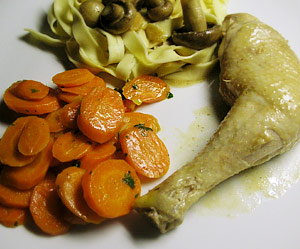

Coq au Riesling
4,5 von 6In einem Schmortopf in weiterer Butter die gehackten Zwiebeln anschwitzen. Die Hahnstücke zugeben und mit dem Mehl bestäuben. Alles eine schöne Farbe annehmen lassen, mit dem Riesling angiessen.
Mit Salz und Pfeffer aus der Mühle würzen. Den Geflügelfond zugeben. Den Schmortopf zudecken und den Hahn auf milder Hitze ca. 40 Minuten köcheln lassen.
Wenn die Fleischstücke gar sind, aus dem Topf heben und warm stellen. Die Champigons und die Crème fraîche beigen und etwas einkochen lassen. Mit etwas Zitronensaft abschmecken und mit Salz und Pfeffer nachwürzen.
